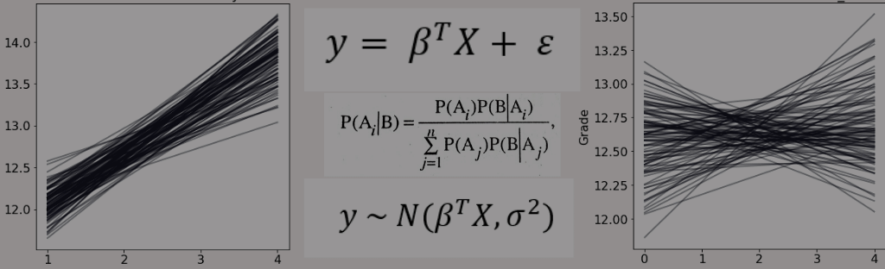
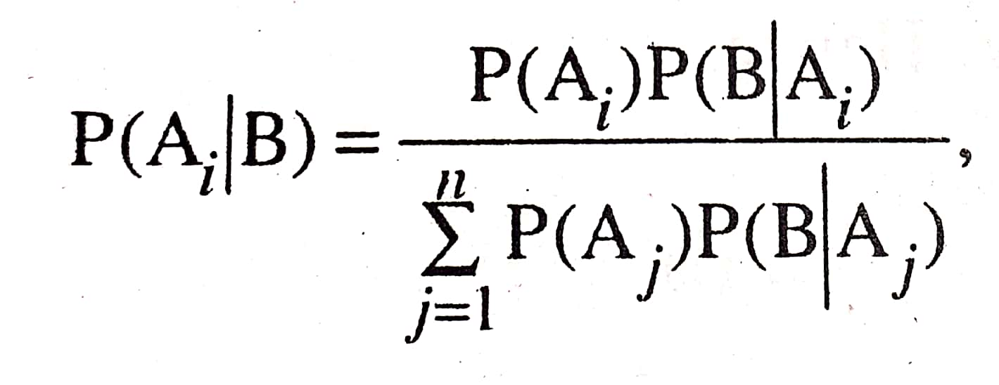
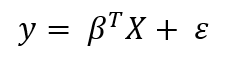
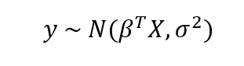
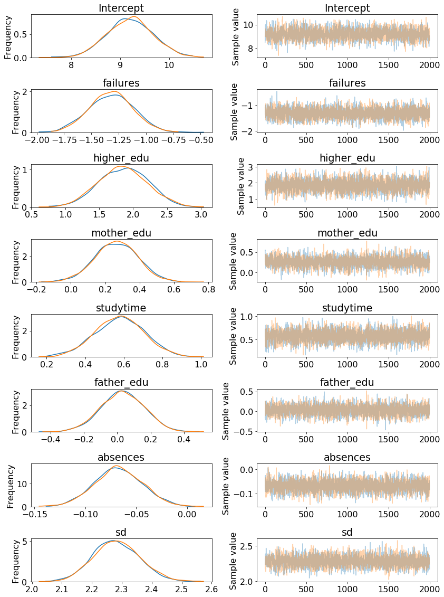
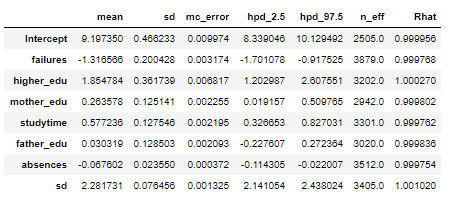
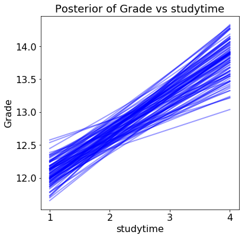
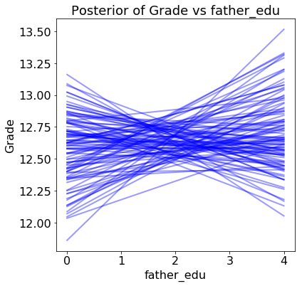

Bayesian inference is a method of statistical inference which uses Bayes’ theorem is used to update the probability for a hypothesis as more evidence or information becomes available.
Bayesian updating is crucial for dynamic analysis of a sequence of data. Bayesian inference is intricately related to subjective probability, better known as “Bayesian Probability”
Suppose that the events A1, A2, …, An are exhaustive and mutually exclusive and none of them have zero probability. Further, let B be an event, which too, has a non zero probability. Then,

It may be said that Bayes’ theorem gives us the posterior probability of Ai in terms of the prior probabilities P(Ai), i=1, 2, …, n and the conditional probabilities of B. But before diving into Bayesian Linear Regression, let us briefly recap frequentist linear regression. Frequentist view of linear regression assumes data is generated from the following model:

y is the response that is generated from the model parameters, β, times the input matrix, X, plus error due to random sampling noise or latent variables. In the ordinary least square method, the model parameters, β, are calculated by finding the parameters which minimize the sum of squared errors on the training data. The output thus consists of single-point estimates that best fit the training data and can be further used to predict for new data points. Bayesian Linear Regression assumes that data responses are sampled from a probability distribution like Normal or Gaussian Distribution.

Here the mean of the distribution is the product of the parameters, β and the inputs, X, and the standard deviation is σ. In Bayesian models the response is assumed to be sampled from a distribution and so are the parameters.
The primary objective of this is to determine the posterior probability of the data to assign priors for the model parameters. The posterior probability utilizes the domain knowledge to determine the predicted output for future data points. In this viewpoint, we could also use non-informative priors. Non-informative priors utilize distributions with large standard deviations that do not assume anything about the variable, that is, it lets the data speak for itself.
In the case of continuous values, calculation of the exact posterior distribution is intractable, thus, we use sampling methods such as Markov Chain Monte Carlo(MCMC) to draw samples from the posterior in order to approximate the posterior. The essential understanding behind this process is that the approximation of the posterior will eventually converge on the true posterior distribution for the model parameters. The conclusion of this process is drawing a distribution which helps in making inferences about the future new observations. The distribution showcases the uncertainty in the model. With the increase in the number of data points, the uncertainty goes down providing better estimates for new data points.
We are using data on student grades collected from a Portuguese secondary (high) school. This data is from the UCI machine learning repository.
The objective is to predict the final grade from the student information which makes this a supervised, regression task. We have a set of training data with known labels, and we want the model to learn a mapping from the features (explanatory variables) to the target (the label) in this case the final grade. It is a regression task because the final grade is a continuous value. There are two primary points that are met in this model. One of which is building a formula relating the features to the target and decide on a prior distribution for the data likelihood. The second one is to sample from the parameter posterior distribution using MCMC. The formula relating the grade to the student characterisics:
Grade ~ failures + higher_edu + mother_edu + study time + father_edu + absences
Based on the correlation of values, we can assume that grade is a linear function of the combination of the six features on the right side of the tilde.
The dedicated sampler runs for few minutes and stores the values in normal_trace
A traceplot shows the posterior distribution for the model parameters on the left and the progression of the samples drawn in the trace for the variable on the right. The two colors represent the two different chains sampled.
p.traceplot(normal_trace):

The left side of the traceplot is the marginal posterior: the values for the variable are on the x-axis with the probability for the variable (as determined by sampling) on the y-axis. The different colored lines indicate that we performed two chains of Markov Chain Monte Carlo. From the left side we can see that there is a range of values for each weight. The right side shows the different sample values drawn as the sampling process runs.
We can also see a summary of the model parameters which: pm.summary(normal_trace):

We can infer that the previous class failures and absences have a negative weight, again the Higher Education plans and studying time have a positive weight. Similarly for the rest. The standard deviation column and hpd limits give us a sense of how confident we are in the model parameters.
In order to see the effect of a single variable on the grade, we can change the value of this variable while holding the others constant and look at how the estimated grades change. To do this, we use the plot_posterior_predictive function and assume that all variables except for the one of interest (the query variable) are at the median value. The results The results show the estimated grade versus the range of the query variable for 100 samples from the posterior:

Each line (there are 100 in each plot) is drawn by picking one set of model parameters from the posterior trace and evaluating the predicted grade across a range of the query variable. The distribution of the lines shows uncertainty in the model parameters: the more spread out the lines, the less sure the model is about the effect of that variable. An instance is the plot for father’s education.

When it comes to making predictions, this model can be used to estimate distributions. We find the normal distribution of estimated outputs and multiply the model parameters by our data point to derive the mean and standard deviation.
In this case, we will take the mean of each model parameter from the trace to serve as the best estimate of the parameter. If we take the mean of the parameters in the trace, then the distribution for a prediction becomes:
Grade ~ N(9.20 * Intercept - 1.32 * failures + 1.85 * higher_edu + 0.26 * mother_edu + 0.58 * studytime + 0.03 * father_edu - 0.07 * absences, 2.28^2)
For a new data point, we substitute the value of the variables and construct the probability density function for the grade.
The {in progress} code for this model is on my GitHub!. Until then you can check out the simpler models on Regression through this link!
01-04-2020